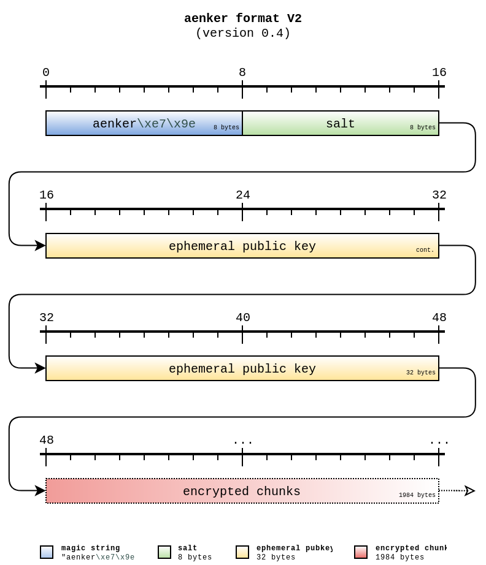
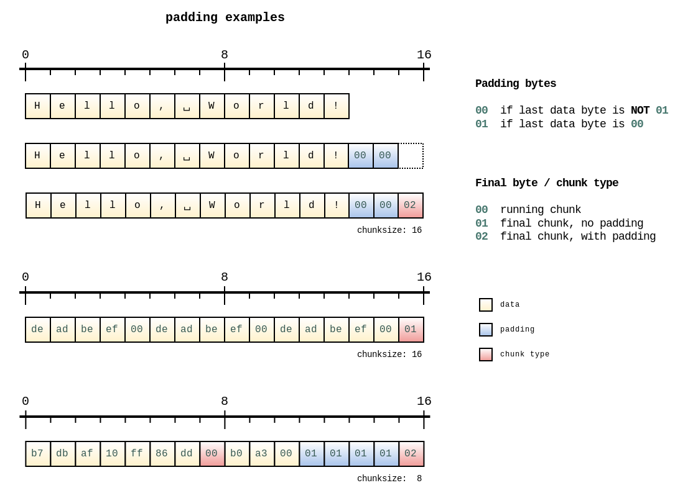
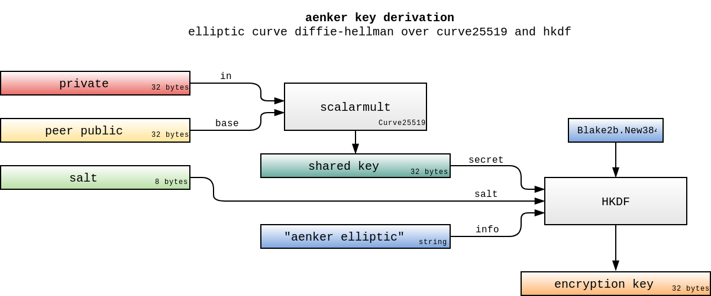

Specification

There is a small decryption script written in Python. It should provide an easily readable overview of the inner workings.
File Format
First of all, the on-disk format of a file encrypted with aenker looks like this:

The first eight bytes are 'magic bytes' to recognize files encrypted with aenker. The bytes
\xe7\x9e are the first two bytes of the Blake2b hash of the word 'aenker':
>>> hashlib.blake2b(b'aenker').digest()[:2]
b'\xe7\x9e'
The salt is randomly generated and is used in conjunction with the private part of the stored ephemeral public key to derive the chunk encryption key.
Chunking
The incoming plaintext is split into equal parts of length chunksize. To be more precise, it is
split into equal parts of length chunksize-1 and is then padded to the
full chunksize length.
Data is padded with either \x00 or \x01, depending on the last byte of input data, and then a
marker byte is appended, which indicates whether this is a running chunk, a final chunk without padding
or a final chunk with padding.
| padding byte | if ... |
|---|---|
\x01 |
last data byte is \x00 |
\x00 |
last data byte is NOT \x00 |
| final byte | chunk type |
|---|---|
\x00 |
running chunk, at least one more following |
\x01 |
final chunk, no padding |
\x02 |
final chunk, padding was added |
In the aenker commandline tool the chunksize is fixed at 1984. This results in exactly 2 kB
ciphertext for small messages and padding and overhead losses approach < 1% for messages larger than
1 MB.

Key Derivation
When encrypting to a recipient's public key, a random ephemeral private key is generated and
anonymous Diffie-Hellman is performed. The encryption key is then derived from
the resulting shared key with HKDF using unkeyed Blake2b-384, a random 8 byte salt and the info
string aenker elliptic:

The ephemeral public key is calculated and then stored in the header, together with the random 8 byte salt.
Encryption
Each chunk is encrypted with ChaCha20Poly1305 using a derived key per message. Each chunk uses the same key, an incrementing nonce and the serialized file header as associated data.
Naturally, the authentication tag adds some length to the encrypted data. You have to account for that during decryption when reading the chunks back.
See the package chunkstream if you want to use this chunked construction in your own application.
Nonce Counter
The implementation can be seen in noncecounter.go. Basically, it is a simple 64-bit incrementing counter which is encoded in LittleEndian into a 12 byte buffer:
00 00 00 00 00 00 00 00 00 00 00 00
01 00 00 00 00 00 00 00 00 00 00 00
02 00 00 00 00 00 00 00 00 00 00 00
03 00 00 00 00 00 00 00 00 00 00 00
...
Due to the use of this simple nonce construction, the nonce need not be saved seperately but it REQUIRES that a unique key is used for every message. Otherwise message integrity and confidentiality could be broken. Hence, an ephemeral keypair is used.